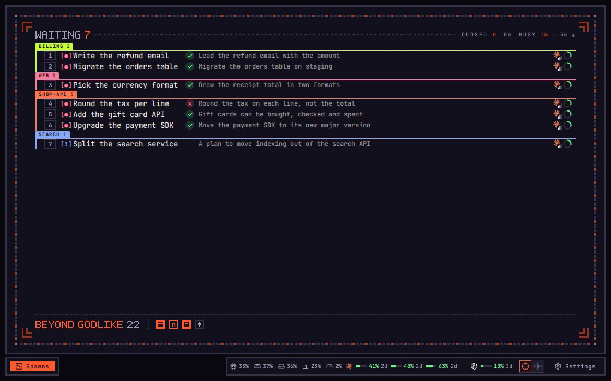

imba / features
imba features
One feature to a page: the idea behind it, and short films of it at work.
| Feature | The idea | On its page |
|---|---|---|
 Ultrafocus |
A higher level of focus, with just enough information. | 6 traps, 4 films |
 Edits Edits |
Understand what a turn changed without reading its files. | 7 traps, 4 films |
Recorded in imba. Every spawn, repository and person in these films is made up.